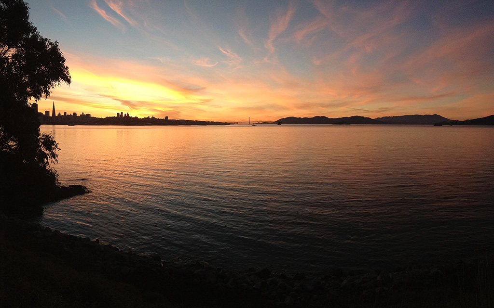
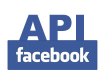
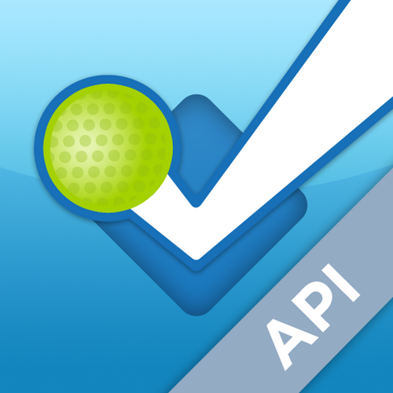

CalCentral - APIs on campus

Different ways

Different ways to access data:
- Screen scraping
- FTP
- Database views
- API
An application programming interface (API) is a protocol intended to be used as an interface by software components to communicate with each other.
We're not the only ones...





We're not the only ones...

APIs: Why?
- Empowering users (students/faculty/staff)
- Integrate in a standard way
- Collaboration accross & outside campus
- Better control
- Easier to integrate with multiple devices
CalCentral APIs
- Internal REST API: front-end/back-end
- Current integrations:
- CalLink (student groups)
- Google
- Canvas (LMS)
- Bearfacts (student data)
CalCentral - WIP: Real-time API
- Notify the user as soon as there is an update
- In current development:
- Registration status
- Registration blocks
- Enrollment changes
- Internally: through Eventsource or Websockets
Let's make it happen, together